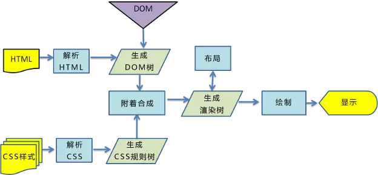
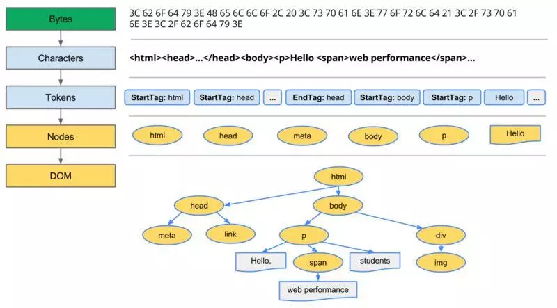
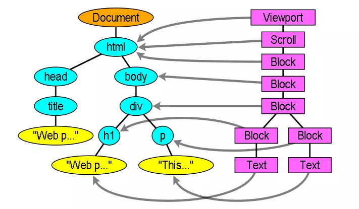
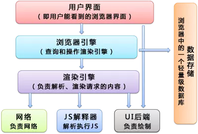

# 浏览器如何渲染网页
# 什么是 DOCTYPE
在 w3school 上是这么解释的：<!DOCTYPE> 声明不是 HTML 标签，指示 web 浏览器关于页面使用哪个 HTML 版本进行编写的指令；在 HTML 4.01 中， <!DOCTYPE> 声明引用 DTD，因为 HTML 4.01 基于 SGML。DTD 规定了标记语言的规则，这样浏览器才能正确地呈现内容。HTML5 不基于 SGML，所以不需要引用 DTD
简而言之，<!DOCTYPE> 规定了浏览器文档使用哪种 html 或者 xhtml 规范
# h5 中使用
1 | <!DOCTYPE html> |
# HTML 4.01 Strict（严格模式）
该 DTD 包含所有 HTML 元素和属性，但不包括展示性的和弃用的元素（比如 font）。不允许框架集（Framesets）。
1 | <!DOCTYPE HTML PUBLIC "-//W3C//DTD HTML 4.01//EN" "http://www.w3.org/TR/html4/strict.dtd"> |
# HTML 4.01 Transitional（宽松模式）
该 DTD 包含所有 HTML 元素和属性，包括展示性的和弃用的元素（比如 font）。不允许框架集（Framesets）。
1 | <!DOCTYPE HTML PUBLIC "-//W3C//DTD HTML 4.01 Transitional//EN" |
# HTML 4.01 Frameset
该 DTD 等同于 HTML 4.01 Transitional，但允许框架集内容。
1 | <!DOCTYPE HTML PUBLIC "-//W3C//DTD HTML 4.01 Frameset//EN" |
# 名词解释
# DTD
Document Type Definition，中文翻译为：文档类型定义。DTD 可定义合法的 XML 文档构建模块。它使用一系列合法的元素来定义文档的结构。因为早期的版本基于 SGML，所以需要套用 SGML 的解析规则。DTD 的作用在于定义 SGML 文档的文档类型以便于浏览器解析。
# SGML
Standard Generalized Markup language。标准通用标记语言（以下简称 “通用标言”），是一种定义电子文档结构和描述其内容的国际标准语言。
如果没有 <!DOCTYPE> 声明，那么不同的浏览器将会以自己不同的怪异的模式去解析渲染页面，这样页面在不同的浏览器上呈现出来的效果也就不一样，人们把这称之为 “怪异模式”。
# 浏览器渲染网页过程
要了解浏览器渲染页面的过程，首先得知道一个名词 —— 关键渲染路径。关键渲染路径是指浏览器从最初接收请求来的 HTML、CSS、javascript 等资源，然后解析、构建树、渲染布局、绘制，最后呈现给客户能看到的界面这整个过程。
用户看到页面实际上可以分为两个阶段：页面内容加载完成和页面资源加载完成，分别对应于 DOMContentLoaded 和 Load。
- DOMContentLoaded 事件触发时，仅当 DOM 加载完成，不包括样式表，图片等
- load 事件触发时，页面上所有的 DOM，样式表，脚本，图片都已加载完成
# 浏览器渲染的过程主要包括以下五步
- 浏览器将获取的 HTML 文档解析成 DOM 树。
- 处理 CSS 标记，构成层叠样式表模型 CSSOM (CSS Object Model)。
- 将 DOM 和 CSSOM 合并为渲染树 (rendering tree) 将会被创建，代表一系列将被渲染的对象。
- 渲染树的每个元素包含的内容都是计算过的，它被称之为布局 layout。浏览器使用一种流式处理的方法，只需要一次绘制操作就可以布局所有的元素。
- 将渲染树的各个节点绘制到屏幕上，这一步被称为绘制 painting。
需要注意的是，以上五个步骤并不一定一次性顺序完成，比如 DOM 或 CSSOM 被修改时，亦或是哪个过程会重复执行，这样才能计算出哪些像素需要在屏幕上进行重新渲染。而在实际情况中，JavaScript 和 CSS 的某些操作往往会多次修改 DOM 或者 CSSOM。

# 浏览器渲染网页的具体流程
# 构建 DOM 树
当浏览器接收到服务器响应来的 HTML 文档后，会遍历文档节点，生成 DOM 树。
需要注意以下几点：
- DOM 树在构建的过程中可能会被 CSS 和 JS 的加载而执行阻塞
- display:none 的元素也会在 DOM 树中
- 注释也会在 DOM 树中
- script 标签会在 DOM 树中
无论是 DOM 还是 CSSOM，都是要经过 Bytes→characters→tokens→nodes→objectmodel 这个过程。

当前节点的所有子节点都构建好后才会去构建当前节点的下一个兄弟节点。
# 构建 CSSOM 规则树
浏览器解析 CSS 文件并生成 CSSOM，每个 CSS 文件都被分析成一个 StyleSheet 对象，每个对象都包含 CSS 规则。CSS 规则对象包含对应于 CSS 语法的选择器和声明对象以及其他对象。
在这个过程需要注意的是：
- CSS 解析可以与 DOM 解析同时进行。
- CSS 解析与 script 的执行互斥 。
- 在 Webkit 内核中进行了 script 执行优化，只有在 JS 访问 CSS 时才会发生互斥。
# 构建渲染树（Render Tree）
通过 DOM 树和 CSS 规则树，浏览器就可以通过它两构建渲染树了。浏览器会先从 DOM 树的根节点开始遍历每个可见节点，然后对每个可见节点找到适配的 CSS 样式规则并应用。
有以下几点需要注意：
- Render Tree 和 DOM Tree 不完全对应
- display: none 的元素不在 Render Tree 中
- visibility: hidden 的元素在 Render Tree 中

渲染树生成后，还是没有办法渲染到屏幕上，渲染到屏幕需要得到各个节点的位置信息，这就需要布局（Layout）的处理了。
# 渲染树布局 (layout of the render tree)
布局阶段会从渲染树的根节点开始遍历，由于渲染树的每个节点都是一个 Render Object 对象，包含宽高，位置，背景色等样式信息。所以浏览器就可以通过这些样式信息来确定每个节点对象在页面上的确切大小和位置，布局阶段的输出就是我们常说的盒子模型，它会精确地捕获每个元素在屏幕内的确切位置与大小。需要注意的是：
- float 元素，absoulte 元素，fixed 元素会发生位置偏移。
- 我们常说的脱离文档流，其实就是脱离 Render Tree。
# 渲染树绘制（Painting the render tree）
在绘制阶段，浏览器会遍历渲染树，调用渲染器的 paint () 方法在屏幕上显示其内容。渲染树的绘制工作是由浏览器的 UI 后端组件完成的。
# 浏览器渲染网页的那些事儿
# 浏览器主要组件结构

渲染引擎主要有两个：webkit 和 Gecko
Firefox 使用 Geoko，Mozilla 自主研发的渲染引擎。Safari 和 Chrome 都使用 webkit。Webkit 是一款开源渲染引擎，它本来是为 linux 平台研发的，后来由 Apple 移植到 Mac 及 Windows 上。
虽然主流浏览器渲染过程叫法有区别，但是主要流程还是相同的。
# 渲染阻塞
JS 可以操作 DOM 来修改 DOM 结构，可以操作 CSSOM 来修改节点样式，这就导致了浏览器在遇到 <script> 标签时，DOM 构建将暂停，直至脚本完成执行，然后继续构建 DOM。如果脚本是外部的，会等待脚本下载完毕，再继续解析文档。现在可以在 script 标签上增加属性 defer 或者 async。脚本解析会将脚本中改变 DOM 和 CSS 的地方分别解析出来，追加到 DOM 树和 CSSOM 规则树上。
每次去执行 JavaScript 脚本都会严重地阻塞 DOM 树的构建，如果 JavaScript 脚本还操作了 CSSOM，而正好这个 CSSOM 还没有下载和构建，浏览器甚至会延迟脚本执行和构建 DOM，直至完成其 CSSOM 的下载和构建。所以，script 标签的位置很重要。
JS 阻塞了构建 DOM 树，也阻塞了其后的构建 CSSOM 规则树，整个解析进程必须等待 JS 的执行完成才能够继续，这就是所谓的 JS 阻塞页面。
由于 CSSOM 负责存储渲染信息，浏览器就必须保证在合成渲染树之前，CSSOM 是完备的，这种完备是指所有的 CSS（内联、内部和外部）都已经下载完，并解析完，只有 CSSOM 和 DOM 的解析完全结束，浏览器才会进入下一步的渲染，这就是 CSS 阻塞渲染。
CSS 阻塞渲染意味着，在 CSSOM 完备前，页面将一直处理白屏状态，这就是为什么样式放在 head 中，仅仅是为了更快的解析 CSS，保证更快的首次渲染。
需要注意的是，即便你没有给页面任何的样式声明，CSSOM 依然会生成，默认生成的 CSSOM 自带浏览器默认样式。
当解析 HTML 的时候，会把新来的元素插入 DOM 树里面，同时去查找 CSS，然后把对应的样式规则应用到元素上，查找样式表是按照从右到左的顺序去匹配的。
例如：div p {font-size: 16px}，会先寻找所有 p 标签并判断它的父标签是否为 div 之后才会决定要不要采用这个样式进行渲染）。
所以，我们平时写 CSS 时，尽量用 id 和 class，千万不要过渡层叠。
# 回流和重绘（reflow 和 repaint）
我们都知道 HTML 默认是流式布局的，但 CSS 和 JS 会打破这种布局，改变 DOM 的外观样式以及大小和位置。因此我们就需要知道两个概念：replaint 和 reflow。
# reflow（回流）
当浏览器发现布局发生了变化，这个时候就需要倒回去重新渲染，大家称这个回退的过程叫 reflow 。 reflow 会从 html 这个 root frame 开始递归往下，依次计算所有的结点几何尺寸和位置，以确认是渲染树的一部分发生变化还是整个渲染树。reflow 几乎是无法避免的，因为只要用户进行交互操作，就势必会发生页面的一部分的重新渲染，且通常我们也无法预估浏览器到底会 reflow 哪一部分的代码，因为他们会相互影响。
# repaint（重绘）
repaint 则是当我们改变某个元素的背景色、文字颜色、边框颜色等等不影响它周围或内部布局的属性时，屏幕的一部分要重画，但是元素的几何尺寸和位置没有发生改变。
需要注意的是， display:none会触发reflow，而visibility: hidden 属性则并不算是不可见属性，它的语义是隐藏元素，但元素仍然占据着布局空间，它会被渲染成一个空框。所以 visibility:hidden 只会触发 repaint，因为没有发生位置变化。
另外有些情况下，比如修改了元素的样式，浏览器并不会立刻 reflow 或 repaint 一次，而是会把这样的操作积攒一批，然后做一次 reflow ，这又叫异步 reflow 或增量异步 reflow 。但是在有些情况下，比如 resize 窗口，改变了页面默认的字体等。对于这些操作，浏览器会马上进行 reflow 。
# 引起 reflow
现代浏览器会对回流做优化，它会等到足够数量的变化发生，再做一次批处理回流。
- 页面第一次渲染（初始化）
- DOM 树变化（如：增删节点）
- Render 树变化（如：padding 改变）
- 浏览器窗口 resize
- 获取元素的某些属性
浏览器为了获得正确的值也会提前触发回流，这样就使得浏览器的优化失效了，这些属性包括 offsetLeft、offsetTop、offsetWidth、offsetHeight、 scrollTop/Left/Width/Height、clientTop/Left/Width/Height、 调用了 getComputedStyle() 。
# 引起 repaint
reflow 回流必定引起 repaint 重绘，重绘可以单独触发。
背景色、颜色、字体改变（注意：字体大小发生变化时，会触发回流）
# 减少 reflow、repaint 触发次数
- 用 transform 做形变和位移可以减少 reflow
- 避免逐个修改节点样式，尽量一次性修改
- 使用 DocumentFragment 将需要多次修改的 DOM 元素缓存，最后一次性 append 到真实 DOM 中渲染
- 可以将需要多次修改的 DOM 元素设置 display:none，操作完再显示。（因为隐藏元素不在 render 树内，因此修改隐藏元素不会触发回流重绘）
- 避免多次读取某些属性
- 通过绝对位移将复杂的节点元素脱离文档流，形成新的 Render Layer，降低回流成本
# 几条关于优化渲染效率的建议
结合上文有以下几点可以优化渲染效率。
- 合法地去书写 HTML 和 CSS ，且不要忘了文档编码类型。
- 样式文件应当在 head 标签中，而脚本文件在 body 结束前，这样可以防止阻塞的方式。
- 简化并优化 CSS 选择器，尽量将嵌套层减少到最小。
- DOM 的多个读操作（或多个写操作），应该放在一起。不要两个读操作之间，加入一个写操作。
- 如果某个样式是通过重排得到的，那么最好缓存结果。避免下一次用到的时候，浏览器又要重排。
- 不要一条条地改变样式，而要通过改变 class，或者 csstext 属性，一次性地改变样式。
- 尽量用 transform 来做形变和位移
- 尽量使用离线 DOM，而不是真实的网面 DOM，来改变元素样式。比如，操作 Document Fragment 对象，完成后再把这个对象加入 DOM。再比如，使用 cloneNode () 方法，在克隆的节点上进行操作，然后再用克隆的节点替换原始节点。
- 先将元素设为 display: none（需要 1 次重排和重绘），然后对这个节点进行 100 次操作，最后再恢复显示（需要 1 次重排和重绘）。这样一来，你就用两次重新渲染，取代了可能高达 100 次的重新渲染。
- position 属性为 absolute 或 fixed 的元素，重排的开销会比较小，因为不用考虑它对其他元素的影响。
- 只在必要的时候，才将元素的 display 属性为可见，因为不可见的元素不影响重排和重绘。另外，visibility : hidden 的元素只对重绘有影响，不影响重排。
- 使用 window.requestAnimationFrame ()、window.requestIdleCallback () 这两个方法调节重新渲染。
原文地址